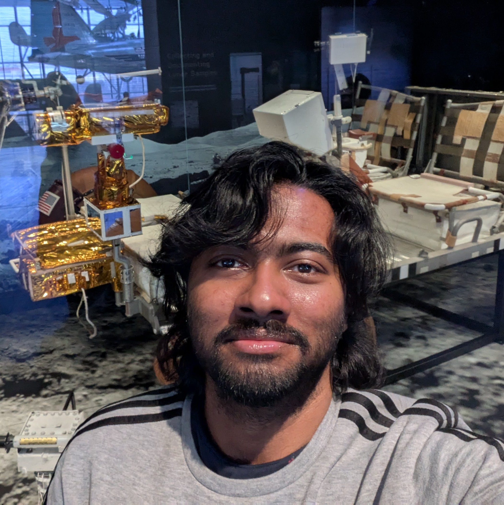

Welcome to my digital space
Hi, I'm Uttaran.
A researcher in Mathematics & Web Application Developer. I explore the intersections of advanced theoretical frameworks and scalable digital design.

Welcome to my digital space
A researcher in Mathematics & Web Application Developer. I explore the intersections of advanced theoretical frameworks and scalable digital design.

Academic study focused on advanced topics including ergodic theory, mean convergence of ergodic averages on graphs, real analysis, and probability distributions.
Interactive web development and app design. Featuring prototypes like HomeChef, a two-sided marketplace utilizing modern frameworks, UI design in Figma, and Firebase backend structures.
Instructional materials, methodologies, and resources dedicated to teaching mathematics, including algebra and trigonometry, aimed at making complex subjects accessible.